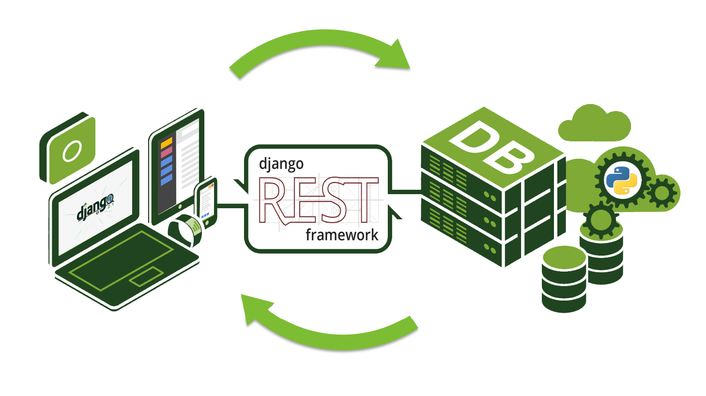

What Is It?
Mobile Backend as a Service (MBaaS) is a generic component service that allows mobile devices to run applications on a remote server, often a cloud server, and access it via an API. This way, a majority of the computing power and memory is handled by the remote server and not the end user's device. This app architecture is often described as modular, like Legos, because the application processes are clearly separated from the end-user processes, and the app may depend on several remote services to run.[2]
How It Works Exactly

Figure from Django
To make it easy to understand, let's break the process down into simple, generalized steps:[1]
- A mobile app is launched.
- The app starts monitoring the device's CPU workload and available bandwidth.
- A service request is sent to an intermediate entity in the MBaaS service called a Resource Manager.
- The Resource Manager assigns an Application Manager to handle the request.
- The Application Manager asks the app for device data such as CPU capability, workload, and current network bandwidth.
- The Application Manager inputs the data into an alogrithm that will assign the appropriate resources for the app.
- The Resource Manager will handle computations on the cloud, while the Application Manager will help deliver services and data to the app.
As indicated in the figure to the left, MBaaS's are RESTful API's.
The Pros
Using a mobile backend service opens up a world of possibilities in the realm of mobile apps. It cuts down the need for faster CPU's and larger memory drives. But it also cuts the developers some slack too, by providing them with an API or SDK that is already compatible with the intended end-users' systems. This leaves the developers more time to work on the actual app itself instead of worrying about the details of linking to a remote server. This was a huge paradigm shift in the tech and business world because companies could just hire someone to make the front end and pay for a backend service, instead of hiring a full stack development team.
The Cons
Of course, there are opportunity costs to even the most seemingly positive solutions. The biggest drawback to outsourcing the backend is that it's not flexible. Imagine a pizza shop that outsources its crusts. Sure, it's convenient. But they can only make pizzas with the types of crust the third party provides. Now imagine a pizza shop that makes their own crust. They could probably make a wider variety of pizzas right? Another issue is reliability. Markets can be a volatile place. What if the company providing your backend service shuts down tomorrow? How quickly can you fill that gap? Speaking of reliability, how secure are their servers anyways? According to the tech blog Clockwise, "if your application is designed to work with confidential data such as user information or payment data, forget about BaaS. Though they claim to be secure, you probably don't want to risk sensitive data by storing it on a shared server." [3]
Common Services Offered by Providers
Filling
Image from kr.123rf.com